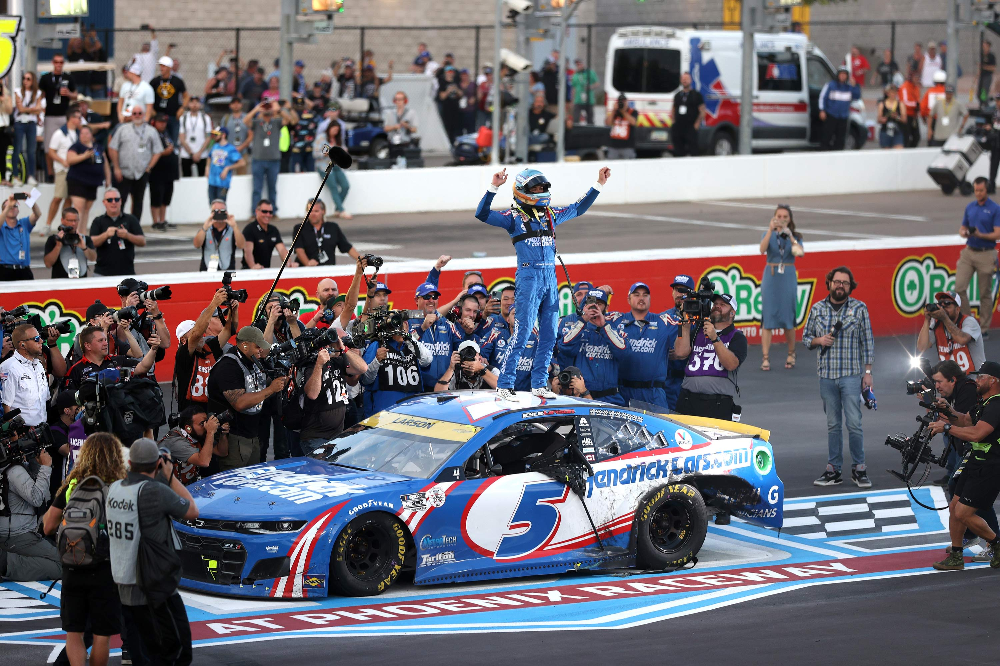

Service
What Service Means to Me
Service means providing help or support to someone or something. To me, it represents using my skills and knowledge to make a positive difference in others' lives, whether that's helping a classmate understand a difficult concept or contributing to the school community.
How I Demonstrated Service During High School
During high school, I demonstrated service by helping classmates understand technical concepts, assisting with technology at school events, and serving as a teacher's assistant. I also worked on fixing iMacs for the library, ensuring that students had access to functioning technology for their learning needs. These experiences taught me the value of using my technical skills to support my school community.
How I Will Demonstrate Service in Life After High School
After high school, I plan to continue demonstrating service through volunteer work in my community, mentoring younger students interested in STEM fields, and eventually contributing to research that benefits society. In my future career in quantum computing, I hope to work on projects that solve real-world problems and improve people's lives through technological advancement.
Ownership
What Ownership Means to Me
Ownership means acknowledging and accepting responsibility for the consequences of my actions. It's about being accountable for my work, admitting when I make mistakes, and taking initiative to correct them rather than making excuses or blaming others.
How I Demonstrated Ownership During High School
I demonstrated ownership by taking responsibility for project outcomes, acknowledging mistakes in my code and learning from them, being accountable for meeting deadlines, and accepting feedback constructively. When I broke a dish, I acknowledged the mistake by apologizing rather than making excuses. In group projects, I ensured my contributions were completed on time and to the best of my ability.
How I Will Demonstrate Ownership in Life After High School
In college and my future career, I will continue to demonstrate ownership by being accountable for my academic performance, taking initiative in research projects, admitting when I don't understand something and seeking help, and accepting responsibility for both successes and failures. As I work toward becoming a quantum computing researcher, I will own my learning process and professional development.
Achievement

What Achievement Means to Me
Achievement is the act of accomplishing something or achieving a goal through dedication and hard work. To me, it represents not just reaching the finish line, but the growth and learning that happens along the journey toward that goal.
How I Demonstrated Achievement During High School
I demonstrated achievement by maintaining high academic performance, completing complex programming projects like my Brave New World literary analysis, developing quantum computing skills, and earning professional certifications such as my Work Readiness Badge. Each of these accomplishments required consistent effort, perseverance through challenges, and a commitment to excellence.
How I Will Demonstrate Achievement in Life After High School
I will continue to demonstrate achievement by earning my degree in physics or computer science, conducting meaningful research in quantum computing, publishing academic papers, and eventually contributing to breakthroughs in quantum algorithms. I also aim to achieve personal growth by developing leadership skills and building strong professional relationships in my field.
Respect
What Respect Means to Me
Respect means showing consideration and appreciation for someone or something. It involves valuing others' perspectives, treating people with dignity, and recognizing the worth of different ideas and contributions, even when they differ from my own.
How I Demonstrated Respect During High School
I demonstrated respect by listening actively to teachers and peers, respecting different perspectives during class discussions, being punctual to show I value others' time, treating school property with care, and acknowledging team contributions in group projects. I made an effort to create an inclusive environment where everyone's voice could be heard.
How I Will Demonstrate Respect in Life After High School
In the future, I will demonstrate respect by valuing diverse perspectives in academic and professional settings, being open to feedback and different approaches to problem-solving, respecting my professors and colleagues, and treating everyone with dignity regardless of their background or position. In collaborative research environments, I will ensure all team members feel valued and heard.